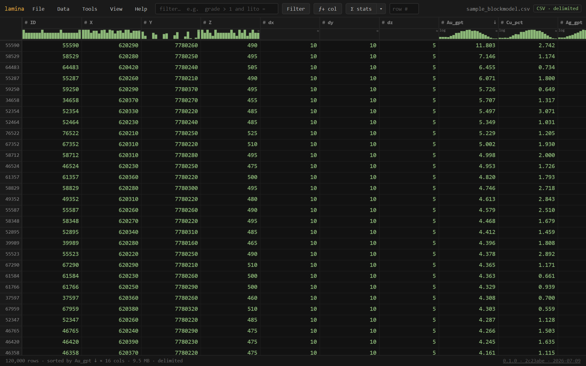
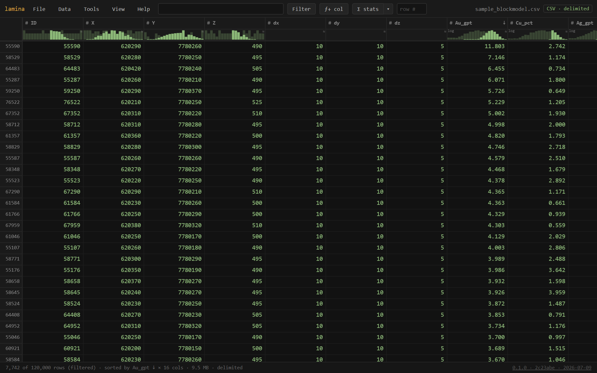
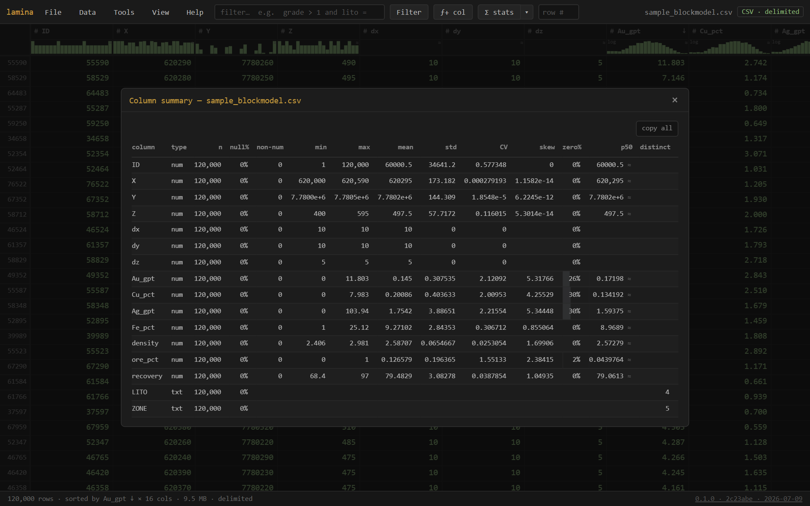
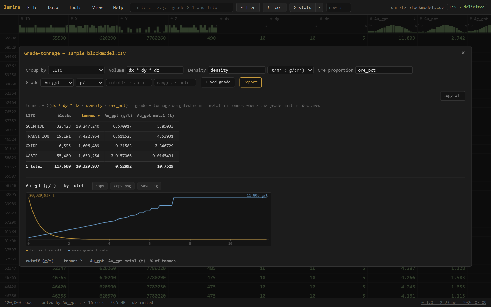
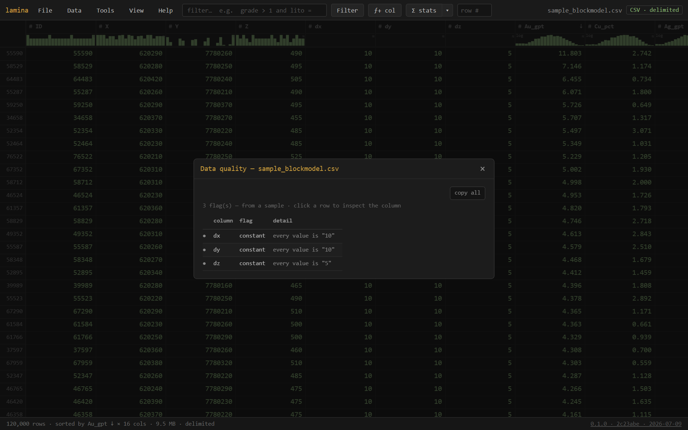

lamina never loads the whole file, so size isn't the problem: a multi-gigabyte CSV or Datamine .dm scrolls in about a second, filters and sorts in place, and reports grade–tonnage — all without an import step, a server, or a byte leaving your machine.

lamina is a single self-contained HTML file — a windowed data viewer built for the files resource geology actually produces. It reads over a coarse block index, decoding only what's on screen (plus what a scan is currently sweeping), so the first look is near-instant at any size and memory stays flat.
It reads:
# comment preambles skipped.dm — opened directly at any size, decoded on the fly (no conversion), with the same filter / sort / stats as CSV; filters read only the columns they need (strided), which is how a 17-column file filters 30× faster than a naïve decodeEverything is read-only: lamina never modifies your file. Derived things — calculated columns, filters, formats — live in the view (and can be saved as a lens), while Export writes a new file.
Tip — No file handy? The empty screen offers ▸ open a sample block model — 120,000 rows generated locally, nothing downloaded.
File → Open (Ctrl+O) or drag a file anywhere onto the window. Recent files are remembered (toggleable) and reopen with one click.
CSV / TSV and any delimited text, at any size — lamina windows the file rather than loading it. Datamine .dm block models, read the same way. Plain text as lines. Archives (.zip .tar .gz .zst .bz2) — peek inside and open an entry without extracting.
Excel .xlsx — drop a workbook and lamina lists its sheets; pick one and it opens as a table. Columns arrive typed from Excel itself (a column is numeric because the workbook says so, not because a string happened to parse), so filters, statistics and distributions work on it immediately. A workbook is a zip and must be read whole, so unlike a CSV it is bounded by memory — for a very large sheet, export it as CSV and lamina will window it at any size. Opening a sheet this way is usually quicker than starting Excel, and the column distributions tell you more than Excel will.
Click the kind badge (top right) or Data → Interpretation… to force the delimiter, header on/off, rows to skip, comment prefix, decimal point vs comma, or the character encoding (UTF-8 · Windows-1252 · Latin-1 · UTF-16). A ⚠ encoding? hint appears in the footer when bytes don't decode cleanly as UTF-8 — mojibake never passes silently.
The grid is windowed: scrolling a 1.8-million-row file reads just the rows in view. Click a header to sort (ascending → descending → off; sorts can stack across columns), the row # box jumps, and Ctrl+F opens find (case / whole-cell / regex / per-column scope / match count). Selected cells copy as TSV with Ctrl+C.
Two dockable panels (View menu): the Columns panel — search, show/hide, drag-reorder, pin-freeze, and per-column settings — and the Record inspector — one row's fields as a list that follows the selection; ↑/↓ step rows and ⊙ pin holds one for a side-by-side compare.
Right-click a numeric header → Color scale heatmaps the cells (8 palettes, linear/log, clip outliers, reverse) — patterns in a million rows read at a glance. Number format and treat as text / number live in the same menu.
Each column header carries a live distribution glyph: a histogram for numbers (with a null-rate bar; ≈ means sampled, log means auto log-scaled for skewed grades), a coloured top-values bar for categories. They're instruments, not decoration:

The filter box speaks a SQL-WHERE-style language: grade > 1 and lito = "OXIDE". Enter applies, Esc clears. Highlights: between … and …, in (…), contains / like / matches for text, is blank / is filled, functions (round sqrt log if(c,a,b) bin coalesce isnum…), and parentheses. Bare words are columns (so fe > cu compares two columns); quoted words are text. Blanks behave sanely — no SQL NULL traps. Autocomplete offers columns, functions, and data values.
On a .dm file the filter reads only the columns the expression uses — the strided fast path — so a selective filter over a huge model finishes in seconds.
The ƒ+ col button (or a header's right-click, or Data → Calculated columns…) adds a derived column from a formula in the same language as the filter: grade * density, if(au > 1, "ore", "waste"), bin(rl, 10) for elevation bands. Computed on the fly, never written; filter, sort, stat, group, and export it like any column.
One column: double-click its glyph (or right-click → Statistics) — histogram with a log-x toggle, quantiles, count / nulls / non-numeric (with examples), min / max / mean / std / CV / skew / zeros, and exclude zeros / negatives re-stats for grade-only views. Copies as TSV.
Every column: Σ stats on the toolbar sweeps the whole table once and opens the Column summary — a sortable row per column (n · null% · non-num · min · max · mean · std · CV · skew · zero% · p50). Sort by null% or non-num to triage a new file in seconds; click a row for detail, click a name to jump to the column in the grid.

Tools → Group by… aggregates value columns per group, with an optional weight column — the weighted mean shows next to the plain one, so an unweighted-vs-length-weighted grade difference is visible instead of hidden. Click a group to filter the grid to it; copy as TSV. Numeric bands: add bin(rl, 10) as a calculated column and group by it.
Tools → Grade–tonnage… is the resource view. Volume · density · ore proportion are expressions (a column, a constant, dx * dy * dz — auto-detected where obvious; blank = 1), with a declared density unit so a kg/m³ column doesn't inflate tonnage a thousandfold. The report gives tonnes · tonnage-weighted grade · contained metal per domain (+ Σ total), and every grade field gets its cutoff curve — tonnes ≥ cutoff falling, mean grade rising — with a table at automatic round cutoffs or your own (0.5, 1, 2 — computed exactly, not snapped).
x:0..2 t:5e6 g:3 pins the cutoff window and the y-scales, so this month's curve overlays last month's at the same scale.
Tools → Grid summary… infers a block model's grid from its centroid columns: origin · block size · count per axis, coordinate ordering (fastest/slowest), sub-block detection, parent-cell count and fill %. "No regular grid" is itself an answer — scattered data, or a broken export. Copy as TSV.
Tools → Data quality… scans for the quiet bugs that bite an estimate: leading zeros lost (a code like 007 read as a number — with a one-click fix: treat as text), non-numeric values hiding in numeric columns, missing-value sentinels (-999…), thousands separators, whitespace padding, all-blank or constant columns, dates-as-text. Click a flag for that column's Statistics; ✓ when clean.

Data → Save lens… saves your view — filter · sort · calculated columns · number formats · color scales · hidden columns · the grade–tonnage setup — as a small .lamina file. Not the data: the recipe for looking at it. Apply lens… (or just open a .lamina) re-applies it to the current file, matching columns by name; anything that doesn't match is skipped and said. One setup, reused across every export with the same schema — and shareable with a colleague.
Data → Export… writes the current view — filtered, sorted, calculated columns included, chosen columns only — to CSV/TSV, streamed straight to the file you pick: never uploaded, never fully held in memory. Opening a .dm and exporting is the .dm→CSV converter, at any size.
lamina is Sealed: it makes no network requests — a browser security policy (connect-src 'none') blocks every connection, so there is no telemetry, no cloud, no auto-update. It is also WASM-free with the runtime in the clear: the code is readable and auditable rather than opaque binary. Your data — models, assays, exports — stays on your device, and its security artifacts (capability declaration, SHA-256, SBOM) are build-enforced, not asserted.
Verify the build and read how to bring it through approval at gentropic.org/security.
lamina runs at gentropic.org/lamina — install it as an app from the browser (it's also on the Microsoft Store as GCU Lamina), or download lamina.html: one file, no installer, that you can keep, e-mail, drop on a shared drive, or run fully offline by double-clicking. Nothing to set up, nothing that phones home. Works in current Chrome / Edge / Firefox.
| Input | Action |
|---|---|
| Ctrl+O | open a file |
| Ctrl+F | find in the table — Enter/Shift+Enter next/prev, case · whole-cell · regex · column scope |
| Enter / Esc in the filter box | apply / clear the filter |
| click a header | sort (ascending → descending → off) |
| right-click a header | statistics · sort · filter by · number format · color scale · text/number · hide |
| right-click a cell | copy (with header / row #) · filter by this value · statistics |
| glyph: hover / click / drag / double-click | read · filter · brush a range · statistics |
| drag a column border / double-click it | resize / autofit |
| kind badge (top right) | change how the file is read |
| row # box | jump to a row |
| Ctrl+C | copy the selection as TSV |
Comparisons = != > >= < <=, boolean and or not (C-style == && also work), between a and b, in (…), contains / like / matches, is blank / is filled, functions round int abs sqrt log exp pow min max clamp bin if coalesce ifnum isnum isnan. Bare words are columns, quoted words are text; bracket awkward names: ["Cu (ppm)"] > 30. The same expressions define calculated columns and the grade–tonnage factors.